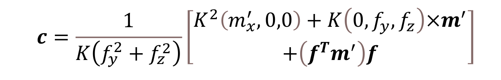

Contact Location Estimation on Dexterous Hand Fingertips

The sensorized fingertip the estimation method is built around.
Overview
An Allegro Hand can occlude an object as grasping begins, interrupting vision-based pose tracking. This work investigates contact information as a complementary signal by estimating where contact occurs on the fingertip using a six-axis force/torque sensor.
The completed evaluation is standalone contact-location estimation. Integration into a visual object-pose estimation pipeline was not performed.
Fingertip design
The fingertip measures 40 × 45 × 28 mm and contains one AFT20-D15 six-axis F/T sensor, with no tactile sensor array. Its contact surface combines planar and variable-curvature regions: the flat region supports stable contact and the curved sides support rolling manipulation. The cap has protrusions for normal/shear force transmission; the cover is 3D-printed silicone rubber with Shore A50 hardness.
Contact-location calculation
The measured force and the moment transferred to a local curvature center are combined with the known surface radius. Three curvature regions use their respective radii to calculate a contact location, which is then transformed back into the sensor frame. The formulation handles curved and planar regions.


The estimator assumes a single contact location and negligible cover deformation. Deformation is a source of error, particularly farther from the sensor.
Validation
A UR5e-positioned end tool supplies the reference contact location. Approximately 40 locations per region were tested across three curvature regions at 1 mm spacing, The reported evaluation uses non-deforming-axis data. The reported mean error is 0.85 mm; the tool contact face has a radius of 1.5 mm.
Error increases as the contact point moves farther from the sensor. Improving the cover and fingertip deformation model remains future work.